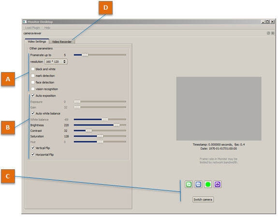
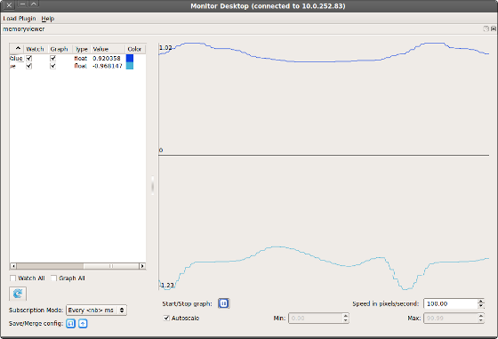
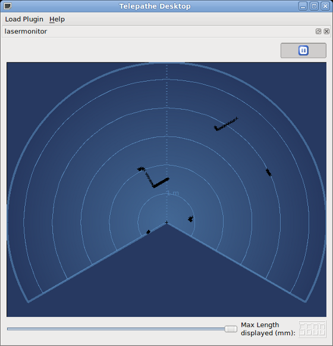

Monitor¶
What is Monitor¶
Monitor is dedicated to give you an elementary feedback from your robot and a simple access to its camera settings.
Its modular architecture allows you to load plugins in different mobile widgets, each of them being connected to the robot of your choice. That is to say you can connect several robots at a time.
3 plugins are available:
- Camera viewer
- Laser monitor - for Laser Head NAO owners only.
- Memory viewer
How to install Monitor¶
Monitor is installed along with Choregraphe. For further details, see Installing Choregraphe suite.
How to launch a Monitor plugin¶
To launch one of the Monitor plugins:
| Step | Action |
|---|---|
Run monitor executable file, located in your Choregraphe installation folder. The following window is displayed. 
|
|
Choose a plugin in the Load Plugin menu. The Connection widget is displayed. |
|
| Select the robot to monitor. | |
Click the Connect to button. A new widget is added to the main window. |
Warning
Opening twice the same plugin widget connected to the same robot is possible, but not supported.
Camera viewer¶
See also
The Camera viewer allows you to:
- configure robot cameras,
- display what they see,
- take pictures or
- record videos.
To load the Camera viewer plugin into Monitor, see How to launch a Monitor plugin.
Once loaded, the following panel is displayed:
| Part | Name | Description |
|---|---|---|
| A | Viewer settings | The following settings have an impact limited to the display on Camera viewer, and has no impact on video recording: whatever the settings, videos are recorded in QVGA (320*240) at 15 fps, with MJPG compression.
|
| B | Camera settings | The following settings impact video recording and all the modules which use the cameras.
|
| C | Action Buttons | Play starts retrieving and displaying images from your robot in the video widget. Pause pauses video display and stops requesting images. Record starts recording a video. stop recording the video and prompts for a destination file. Snapshot takes three pictures (a,b,c) of what the robot sees. The files will be saved to: /home/nao/.local/share/naoqi/vision/{timestamp}{a,b,c}.jpg Switch camera: switches between head’s front and bottom cameras. |
| D | Video Recorder tab | This panel allows you to define the file name used to store the video on the robot. It also displays information about the last recorded video file. |
Memory viewer¶
This plugin allows you to watch the data held by the ALMemory module of a given NAOqi. Number-like data evolution can also be plotted. This is very useful to diagnose behaviors through the internal data they use.
You can also follow hardware data like those you can see on your NAO Web page in the Advanced > Hardware section.
Architecture overview
There are a lot of data keys in ALMemory. That is why it is recommended to select a restricted set of keys to watch, saved as an XML configuration file, instead of gathering all the values, which is much slower.
When you load the Memory viewer plugin, as explained in How to launch a Monitor plugin section, several possibilities are offered:
| Name | Description |
|---|---|
| New configuration file | select a new set keys to track. |
| Open configuration file: | select a previously saved set of keys. |
| Do not use a config file (slow) | select every data key and filter them manually. |
Once you have your configuration set up, the plugin will load its main window:
Plot Widget¶
On the right side of the widget, you can see the plot viewer. Every key which option Graph is checked will be shown in this plot.
Managing the Key list¶
On the left side of the widget, is displayed the list of keys defined in the configuration file. The list shows several columns:
- Name
- Watch: whether to track the value or not.
- Graph: whether to add the value to the plot. Overrides Watch, as the value must be tracked to be plotted.
- Type: the value type. Can be bool, int, float, string or invalid.
- Value: the value.
- Color: the color of the curve representing the key values in the plot.
Below the list, you can also select Watch all or Graph all, to easily have an overview of all the keys.
Managing the Subscription Mode¶
- Subscription Mode controls the refresh rate of the key list values. When selecting the mode “Every <nb> ms”, you will be prompted the refresh period you like. Selecting the mode “No subscription” disables automatic update of the values.
- The blue arrow button allow you to refresh manually the values of the list. This is useful whenever you set the Subscription mode to “No subscription”.
Note
The subscription period parameter does not affect the plot scroll. It may only affect plot resolution.
Managing configuration file¶
You can save every change you have done on this panel by clicking the save button in the Save/Merge config section, at the bottom left of the widget.
You can also import configuration files using the second button, so that it is merged with your current configuration.
Managing the plot¶
Along with this view, few options below are available:
- Start/Stop graph: start / stop value plotting.
- Speed in pixel/second: set here the plot auto-scrolling speed.
- Autoscale: when checked, the widget will zoom the plot to fit exactly the minimum and maximum values displayed. Min and Max are enabled only when Autoscale is disabled, and allows you to set the vertical bounds of the plot manually.
Laser monitor¶
See also
This feature is only available for NAO Laser Head owners.
This plugin allows you to display what is seen by the laser telemeter.
To load the Laser Monitor plugin into Monitor, see How to launch a Monitor plugin.
Once loaded, the following panel is displayed:
Distances measured by the laser sensor, are projected as cross dots on a polar graph, with the correct angular ratio and offsets.
The scrollbar at the bottom of the widget filters the points, so you can focus on closer obstacles, it has no effect on the laser sensor.